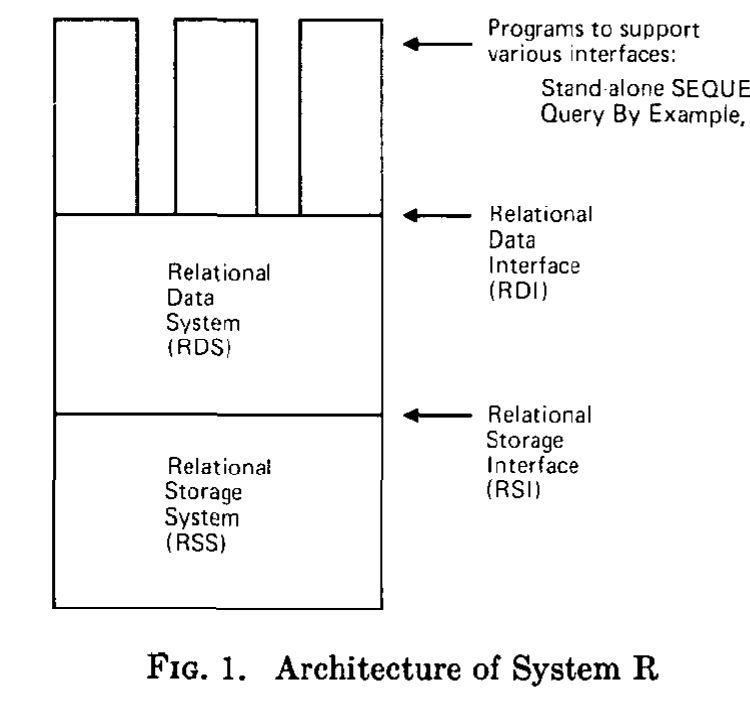
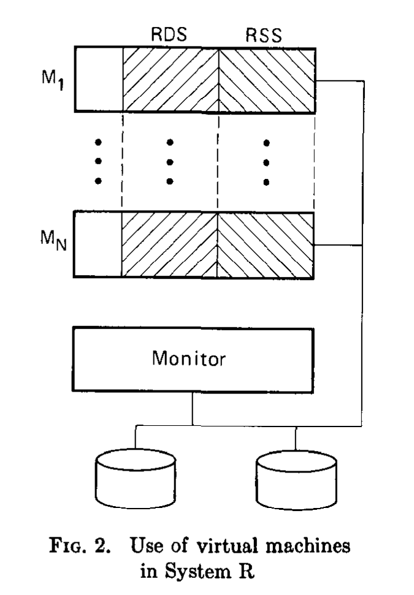
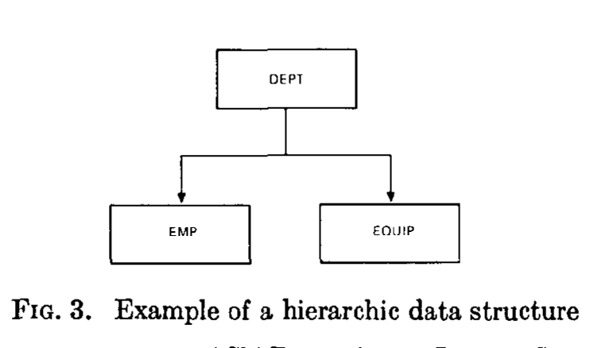

classic / advanced
System R：面向数据库管理的关系方法
System R: Relational Approach to Database Management
1976 · ACM Transactions on Database Systems, 1(2): 97–137
目录
System R：面向数据库管理的关系方法
M. M. ASTRAHAN, M. W. BLASGEN, D. D. CHAMBERLIN, K. P. ESWARAN, J. N. GRAY, P. P. GRIFFITHS, W. F. KING, R. A. LORIE, P. R. McJONES, J. W. MEHL, G. R. PUTZOLU, I. L. TRAIGER, B. W. WADE, V. WATSON
IBM Research Laboratory
摘要
System R 是一个提供高级关系数据接口的数据库管理系统。该系统通过尽可能把最终用户与底层存储结构隔离开来，提供了高度的数据独立性。系统允许在共同的底层数据之上定义多种关系视图。系统提供数据控制设施，包括授权、完整性断言、触发事务、日志与恢复子系统，以及在共享更新环境中维护数据一致性的机制。
本文描述了该系统的整体架构与设计。目前该系统正在实现之中，设计也在评估之中。我们强调，System R 是数据库架构研究的载体，并不打算作为产品推出。
关键词与短语：数据库、关系模型、非过程式语言、授权、封锁、恢复、数据结构、索引结构
CR 分类：3.74，4.22，4.33，4.35
1. 引言
Codd 在 1970 年提出关系数据模型 [7]，把它作为解决数据库管理中各种问题的一种途径。特别是，Codd 解决了两个问题：提供一个脱离各种实现考虑的数据模型或视图（数据独立性问题），以及为数据库用户提供一个非常高级的、非过程式的数据子语言来访问数据。
在很大程度上，关系方法的接受程度与价值取决于能否证明：可以构造一个系统，它能在真实环境中用来解决真实问题，并且性能至少与当今已有系统相当。本文的目的，是描述一个名为 System R 的实验性原型数据库管理系统的整体架构与设计方面。该系统目前正在 IBM 圣何塞研究实验室实现与评估。在撰写本文时，设计已经完成，系统的主要部分已经实现并运行。不过，整个系统尚未完成。我们计划在后续论文中给出完整的性能评估。
System R 项目并不是关系方法的首次实现 [12, 30]。另一方面，就我们所知，还没有其他关系系统提供完整的数据库管理能力——包括应用程序设计以及查询能力、并发访问支持、系统恢复等。其他关系系统专注于并证明了解决各种特定问题的技术的可行性。例如，IS/1 系统 [22] 证明了支持关系代数 [8] 的可行性，并开发了求值代数表达式的优化技术 [29]。Smith 与 Chang 在犹他大学也开发了关系代数优化技术 [27]。IBM 剑桥科学中心开发的扩展关系存储（XRM）系统 [19] 已被其他关系系统用作单用户访问方法 [2]。SEQUEL 原型 [1] 最初是作为单用户系统开发的，用以证明支持 SEQUEL 语言 [5] 的可行性。不过，该系统后来被 IBM 剑桥科学中心与 MIT Sloan 管理学院能源实验室扩展，以支持一种简单类型的并发，并被用作 MIT 为能源相关应用开发的通用管理信息系统（GMIS）[9] 的一个组件。加州大学伯克利分校开发的 INGRES 项目 [16] 证明了把 QUEL 语言中的关系表达式分解为“单变量查询”的技术 [29]。此外，该系统还研究了用查询修改 [28] 来强制实施完整性约束与对用户施加授权约束。把高级用户语言翻译成低级访问原语的问题，也在多伦多大学得到研究 [21, 26]。
架构与系统结构
我们将从两个视角描述 System R 的整体架构。首先，把系统看作单个事务所见的样子，即单一整体的描述。其次，考察它的多用户维度。图 1 给出了系统的功能视图，包括它的主要接口与组件。

关系存储接口（RSI）是一个内部接口，负责处理对基本关系中单个元组的访问。该接口及其支撑系统关系存储系统（RSS）实际上是一个完整的存储子系统：它管理设备、空间分配、存储缓冲区、事务一致性与封锁、死锁检测、回退、事务恢复以及系统恢复。此外，它维护基本关系选定字段上的索引和跨关系指针链。
关系数据接口（RDI）是外部接口，可以直接从编程语言调用，也可以用来支撑各种仿真器和其他接口。支持 RDI 的关系数据系统（RDS）提供授权、完整性强制实施，并支持数据的替代视图。高级 SEQUEL 语言嵌入在 RDI 之中，被用作所有数据定义与数据操作的基础。此外，RDS 维护外部名的目录，因为 RSS 只使用系统生成的内部名。RDS 包含一个优化器，它从 RSS 支持的访问路径中，为任意给定请求选择合适的访问路径。

这个实验系统当前的操作系统环境是 VM/370 [18]。为了支持 System R 的多用户环境，人们对这一虚拟机设施做了若干扩展 [14]。特别是，我们实现了一种技术：在任意数量的虚拟机之间有选择地共享可读写的虚拟内存，并通过处理器中断实现虚拟机之间的高效通信。图 2 说明了使用许多虚拟机来支持对共享数据的并发事务。每个登录用户都有一台专用的数据库机器。每台数据库机器都包含执行所有数据管理功能所需的代码和表；也就是说，服务并不保留在一台中心机器上。
提供多台数据库机器，每台都执行共享的、可重入的代码并共享控制信息，这意味着数据库系统不需要提供自己的多任务处理来处理并发事务。相反，可以使用主机操作系统在虚拟机层次上进行多线程处理。此外，操作系统可以利用分配给若干虚拟机的多处理机能力，因为每台机器都能够提供全部数据管理服务。单服务器方式会消除这一优势，因为那样大部分处理活动将集中在一台机器上。
除数据库机器之外，图 2 还展示了监控机（Monitor Machine），它包含许多系统管理设施。例如，监控机控制登录授权，并为每个用户初始化数据库机器。监控机还调度周期性检查点，并维护用于重组和计费的使用情况与性能统计信息。
在第 2 节与第 3 节中，我们描述 System R 的两个主要组件：关系数据系统与关系存储系统。
2. 关系数据系统
关系数据接口（RDI）是 System R 的主要外部接口。它提供高级的、数据独立的设施，用于数据检索、操作、定义与控制。RDI 的数据定义设施允许在共同的底层数据之上定义各种替代的关系视图。关系数据系统（RDS）是实现 RDI 的子系统。RDS 包含一个优化器，它规划每条 RDI 命令的执行，从关系存储系统（RSS）所提供的访问路径中选择一条低代价的访问路径。
RDI 由一组操作符组成，可从 PL/I 或其他宿主编程语言调用（这些操作符的列表见附录 I）。SEQUEL 数据子语言 [5] 的全部设施，都可以通过名为 SEQUEL 的 RDI 操作符在 RDI 上使用。（SEQUEL 的巴科斯-诺尔范式（BNF）语法见附录 II。）SEQUEL 语言可以作为一个独立接口得到支持：只需在 RDI 之上编写一个处理终端通信的简单程序即可。（作为 System R 的一部分，提供了一个这样的独立 SEQUEL 接口，称为用户友好接口 UFI。）此外，可以在 RDI 之上编写程序来支持其他关系接口，例如 Query by Example [31]，或者模拟非关系接口。
宿主语言接口
RDI 的设施基本上就是 SEQUEL 数据子语言的设施，后者在文献 [5] 和附录 II 中描述。自该语言早期发表以来，SEQUEL 已经做了若干修改，下面予以说明。
本节使用的示例基于如下雇员及其部门数据库：
EMP(EMPNO, NAME, DNO, JOB, SAL, MGR)
DEPT(DNO, DNAME, LOC, NEMPS)
RDI 通过游标（cursor）的概念把 SEQUEL 与宿主编程语言连接起来。游标是在 RDI 中使用的一个名字，用来标识一组称为其活动集的元组（例如查询结果），并在该集合的某个元组上维护一个位置。游标通过 RDI 操作符 SEQUEL 与一组元组相关联；随后可以通过 RDI 操作符 FETCH 一次取回一个元组。
有些宿主程序事先确切知道希望取回的元组的度与数据类型。这样的程序可以在其 SEQUEL 调用中指定结果元组将被送入的程序变量。程序必须首先通过 RDI 操作符 BIND 把这些程序变量的地址交给系统。在下面的例子中，宿主程序向系统标识变量 X 与 Y，然后发出一个查询，其结果将放入这些变量：
CALL BIND('X', ADDR(X));
CALL BIND('Y', ADDR(Y));
CALL SEQUEL(C1, 'SELECT NAME:X, SAL:Y
FROM EMP
WHERE JOB = ''PROGRAMMER''');
这次 SEQUEL 调用的效果是：把游标 C1 与满足该查询的元组集合关联起来，并把游标定位在第一个这样的元组之前。优化器被调用以选择一条访问路径，使这些元组能够被具体化。但是，作为对 SEQUEL 调用的响应，实际上并没有元组被具体化。元组的具体化是在 FETCH 操作符按需请求时逐个完成的。每次调用 FETCH 都会把活动集的下一个元组送入程序变量 X 与 Y，即把 NAME 送入 X，把 SAL 送入 Y：
CALL FETCH(C1);
程序可能希望基于某个程序变量的内容书写 SEQUEL 谓词——例如，找出部门号与程序变量 Z 内容相同的程序员。这一设施同样由 RDI 的 BIND 操作符提供，如下所示：
CALL BIND('X', ADDR(X));
CALL BIND('Y', ADDR(Y));
CALL BIND('Z', ADDR(Z));
CALL SEQUEL(C1, 'SELECT NAME:X, SAL:Y
FROM EMP
WHERE JOB = ''PROGRAMMER''
AND DNO = Z');
CALL FETCH(C1);
有些程序可能事先不知道查询将返回的元组的度与数据类型。这类程序的一个例子是：支持交互式用户键入查询并显示结果。这种程序不需要在其 SEQUEL 调用中指定结果将被送入的变量。程序可以发出 SEQUEL 查询，随后调用 DESCRIBE 操作符，它返回元组的度与数据类型。然后程序在其 FETCH 命令中指定元组的存放位置。下面的例子说明了这些技术：
CALL SEQUEL(C1, 'SELECT *
FROM EMP
WHERE DNO = 50');
这条语句调用优化器为该查询选择访问路径，并把游标 C1 与它的活动集关联起来。
CALL DESCRIBE(C1, DEGREE, P);
P 是一个指向数组的指针，C1 的活动集的描述将被返回到该数组中。RDI 在 DEGREE 中返回活动集的度，并在数组元素中返回元组各分量的数据类型与长度。如果该数组（它包含一个描述自身长度的条目）太短，无法容纳元组描述，则调用程序必须分配一个更大的数组并再次调用 DESCRIBE。
在获得将要返回的元组的描述之后，调用程序可以继续分配一个结构来存放元组，并在其 FETCH 命令中指定这个结构的位置：
CALL FETCH(C1, Q);
Q 是一个指向指针数组的指针，这些指针指定元组各分量应被送到何处。如果 FETCH 命令中存在这个“目标”参数，它将覆盖定义 C1 活动集的 SEQUEL 命令中可能指定的任何目标。
RDI 提供了一个特殊操作符 OPEN，作为把游标与整个关系关联起来的简写方法。例如命令
CALL OPEN(C1, 'EMP');
完全等价于
CALL SEQUEL(C1, 'SELECT * FROM EMP');
使用 OPEN 略优于使用 SEQUEL 在关系上打开游标，因为 OPEN 避免了使用 SEQUEL 语法分析器。
一个程序可以同时有许多游标处于活动状态。每个游标保持活动，直到对它的 RDI 操作符 CLOSE 或 KEEP 被发出。CLOSE 只是使游标失效。KEEP 则使游标所标识的元组被复制，形成数据库中一个新的永久关系，具有指定的关系名与字段名。
引入 RDI 操作符 FETCH-HOLD 是为了支持提供显式封锁的接口。FETCH-HOLD 的操作方式与 FETCH 完全相同，不同之处在于它还会在返回的元组上获得一个“保持”（hold），阻止其他用户更新或删除该元组，直到它被显式释放或持有该元组的事务结束。可以通过 RELEASE 操作符释放一个元组，它以一个定位在待释放元组上的游标作为参数。如果没有提供游标，RELEASE 操作符将释放该用户当前持有的所有元组。
查询设施
本节只描述自 SEQUEL 查询设施最初发表 [5] 以来所做的最重要修改。这些修改纠正了原语法中的某些不足，并使 SEQUEL 更容易与宿主编程语言接口。一项重要修改涉及块标签的处理。下面的例子引自文献 [5]，说明了原始版本的 SEQUEL。（为简洁起见，接下来的几个例子中省略了“CALL SEQUEL (...)”。）
例 1(a) 列出工资高于其经理的雇员的姓名。
B1: SELECT NAME
FROM EMP
WHERE SAL >
SELECT SAL
FROM EMP
WHERE EMPNO = B1.MGR
经验表明，这种块标签记法有三个缺点：
- 无法从内层块中选择量。例如：“对所有工资高于其经理的雇员，列出雇员姓名及其经理姓名。”
- 由于查询是非对称表达的，优化器会倾向于把第一个块作为外层循环、第二个块作为内层循环。由于这可能不是解释该查询的最优方法，优化过程变得困难。
- 人因研究表明，块标签记法对非程序员而言难以学习 [24, 25]。
由于这些缺点，块标签记法被下面这种更加对称的记法所取代：它允许在 FROM 子句中列出多张表，并可选择用变量名引用它们。
例 1(b) 对所有工资高于其经理的雇员，列出雇员姓名及其经理姓名。
SELECT X.NAME, Y.NAME
FROM EMP X, EMP Y
WHERE X.MGR = Y.EMPNO
AND X.SAL > Y.SAL
例 1(b) 说明了 SEQUEL 对关系代数中 JOIN 操作符的记法。要连接的表列在 FROM 子句中。FROM 子句中列出的每张表都可以选择关联一个变量名（如上面的 X 与 Y）。行与行之间的连接准则在 WHERE 子句中给出（本例中为 X.MGR = Y.EMPNO）。查询中出现的字段名既可以单独出现（若无歧义），也可以用表名（如 EMP.SAL）或变量（如 X.SAL）加以限定。
在早期报告 [5] 中，WHERE 子句有两种用途：既用于限定单个元组（例如“列出职员雇员”），也用于限定元组组（例如“列出拥有超过十名雇员的部门”）。现在，通过把组限定谓词移到一个单独的 HAVING 子句中，消除了这种歧义。查询按以下顺序处理：
- 元组由 WHERE 子句选择；
- 组由 GROUP BY 子句形成；
- 选择满足 HAVING 子句的组，如下例所示。
例 2 列出拥有超过十名职员的部门的 DNO。
SELECT DNO
FROM EMP
WHERE JOB = 'CLERK'
GROUP BY DNO
HAVING COUNT(*) > 10
在文献 [5] 所述特性之上，又增加了两项查询特性。第一项允许用户为查询结果指定一个值的排序。
例 3（排序） 列出部门 50 中的所有雇员，按工资排序。
SELECT *
FROM EMP
WHERE DNO = 50
ORDER BY SAL
另一项新特性主要对 RDI 的宿主语言用户有用，它允许通过把元组与某个活动游标的当前元组相比较来限定元组：
例 4（游标引用） 找出游标 C5 所指部门中的所有雇员。
SELECT *
FROM EMP
WHERE DNO = DNO OF CURSOR C5 ON DEPT
对游标 C5 内容的这一引用，在查询执行时（通过 SEQUEL 调用）求值。此后，移动游标 C5 不会影响该查询所定义的元组集合。可选短语 ON DEPT 向优化器表明，可以预期游标 C5 定位在 DEPT 表的一个元组上。这一信息有助于为查询选择访问路径。
由于从查询结果中消除重复值是一个代价高昂的过程，而且并非总是必要，RDS 除非被显式要求，否则不会消除重复值。例如，SELECT DNO, JOB FROM EMP 可能返回重复的 DNO, JOB 对，而 SELECT UNIQUE DNO, JOB FROM EMP 只返回唯一的对。类似地，SELECT AVG(SAL) FROM EMP 允许重复的工资值参与平均值计算，而 SELECT COUNT(UNIQUE JOB) FROM EMP 只返回 EMP 关系中不同工种的数量。
数据操作设施
RDI 中用于插入、删除和更新元组的设施也通过 SEQUEL 数据子语言提供。SEQUEL 既可以用来一次操作一个元组，也可以用一条命令操作一组元组。某个特定游标的当前元组，可以通过特殊谓词 CURRENT TUPLE OF CURSOR 选中以进行某种操作。元组的值可以设为常量，可以设为由其旧值计算出的新值，也可以设为由 BIND 命令适当标识的程序变量的内容。下面的例子将说明这些设施。由于这些例子中没有结果返回给调用程序，因此 SEQUEL 调用中不包含游标名。
例 5（面向集合的更新） 给部门 50 的所有雇员加薪 10%。
CALL SEQUEL('UPDATE EMP
SET SAL = SAL * 1.1
WHERE DNO = 50');
例 6（单个更新）
CALL BIND('PVSAL', ADDR(PVSAL));
CALL SEQUEL('UPDATE EMP
SET SAL = PVSAL
WHERE CURRENT TUPLE OF CURSOR C3');
例 7（单个插入） 本例向 EMP 插入一个新的雇员元组。新元组一部分由常量构造，一部分由程序变量的内容构造。
CALL BIND('PVEMPNO', ADDR(PVEMPNO));
CALL BIND('PVNAME', ADDR(PVNAME));
CALL BIND('PVMGR', ADDR(PVMGR));
CALL SEQUEL('INSERT INTO EMP:
(PVEMPNO, PVNAME, 50, ''TRAINEE'', 8500, PVMGR)');
SEQUEL 中的插入语句可以只为新元组提供部分值，并指定所提供字段的名字。未提供的字段被设为空值。新元组在存储中的物理位置受相关 RSS 访问路径上所声明的“聚簇”规格影响（见下文）。
例 8（面向集合的删除） 删除所有在 Evanston 的部门工作的雇员。
CALL SEQUEL('DELETE EMP
WHERE DNO =
SELECT DNO
FROM DEPT
WHERE LOC = ''EVANSTON''');
SEQUEL 赋值语句允许把查询结果复制进数据库中一个新的永久或临时关系。其效果等同于一条查询后跟 RDI 操作符 KEEP。
例 9（赋值） 创建一个新表 UNDERPAID，其中包含工资低于 10000 美元的程序员的姓名与工资。
CALL SEQUEL('UNDERPAID(NAME, SAL) <-
SELECT NAME, SAL
FROM EMP
WHERE JOB = ''PROGRAMMER''
AND SAL < 10000');
新表 UNDERPAID 表示在执行赋值那一刻从 EMP 取得的一个快照。UNDERPAID 随后成为一个独立的关系，不反映 EMP 的任何后续变化。
数据定义设施
System R 对数据操作、定义与控制采取统一的方法。与查询和面向集合的更新一样，数据定义设施也是通过 RDI 操作符 SEQUEL 调用的。其中许多设施已在文献 [4] 和 [15] 中描述。
SEQUEL 语句 CREATE TABLE 用于创建一个新的基本（即物理存储的）关系。对于新关系的每个字段，需要指定字段名与数据类型。¹ 如果需要，还可以在创建时指定新关系的一个或多个字段不允许空值。除非查询带有 ORDER BY 子句，否则在关系上执行的查询将按系统决定的顺序（取决于优化器选择的访问路径）返回结果。当某个基本关系不再有用时，可以通过 DROP TABLE 语句删除它。
System R 目前依赖用户不仅指定要存储的基本表，还指定要在其上维护的 RSS 访问路径。（自动化并自适应其中某些决策的数据库设计设施也在研究之中。）访问路径包括第 3 节描述的映像（images）与二元链（binary links）。² 它们可以用 SEQUEL 动词 CREATE 与 DROP 指定。简而言之，映像是 RSS 在基本关系上维护的值排序，使用多级索引结构实现。索引结构把一个值与一个或多个元组标识符（TID）关联起来。TID 是一种内部地址，允许快速访问元组，如第 3 节所述。映像在被称为该映像排序字段的一个或多个字段上提供关联访问与顺序访问。映像可以声明为 UNIQUE，这强制每个排序字段值组合在关系中是唯一的。每个关系至多有一个映像可以具有聚簇（clustering）属性，它使排序字段值相近的元组在物理上存储得彼此接近。
二元链是 RSS 中的一种访问路径，它通过指针链把一个关系中的元组连接到另一个关系中的相关元组。在 System R 中，二元链总是以值依赖的方式使用：用户指定关系 1 的每个元组要链接到关系 2 中在某些字段上具有匹配值的元组，并指定链上的元组按某种值依赖的方式排序。例如，用户可以指定一条从 DEPT 到 EMP 的链，通过 DNO 匹配，且链上的 EMP 元组按 JOB 与 SAL 排序。该链由系统自动维护。通过声明一条在匹配 DNO 上从 DEPT 到 EMP 的链，用户隐含地声明这是一个一对多关系（即 DNO 是 DEPT 的键）。任何违反这一规则而定义链或插入、更新元组的尝试都将被拒绝。和映像一样，链也可以声明具有聚簇属性，使每个元组在物理上存储得靠近它在链中的邻居。
应当明确注意，这些访问路径（映像与二元链）都不包含任何不能从数据值本身推导出的逻辑信息。这符合关系数据模型——它把所有信息都表示为数据值。RDI 用户不能显式控制元组在映像与链中的放置（与 DBTG 方案 [6] 中的“手工集”不同）。此外，RDI 用户不能显式使用某个映像或链来访问数据；所有访问路径的选择都由优化器自动完成。
SEQUEL 的查询能力可用于把一个视图定义为从一个或多个其他关系派生出的关系。随后，该视图的使用方式与基本表相同：可以针对它编写查询，可以在它之上定义其他视图，并且在下文所述的某些情况下可以更新它。任何 SEQUEL 查询都可以通过 DEFINE VIEW 语句用作视图定义。视图是数据库上的动态窗口：对基本表的更新会立即通过定义在这些基本表上的视图显现出来。在支持对视图进行更新的地方，这些更新是通过对底层基本表的更新来实现的。定义视图的 SEQUEL 语句记录在系统维护的目录中，授权用户可以检查它。当授权用户发出 DROP VIEW 语句时，所指定的视图以及所有基于它定义的其他视图，对该用户和所有其他用户都从系统中消失。
如果对视图发出修改操作，只有在该视图的元组与某个底层基本关系的元组一一对应时，才能够支持该修改。一般而言，这意味着该视图必须只涉及单个基本关系，并包含该关系的一个键；否则修改语句将被拒绝。如果视图满足一对一规则，SEQUEL 修改语句的 WHERE 子句会被合并到视图定义中；结果被优化，并对基本关系中的相关元组执行指定的更新。
最后两条 SEQUEL 命令结束了数据定义设施的讨论。第一条是 KEEP TABLE，它使一个临时表（例如通过赋值创建的表）变为永久表。（临时表在创建它的用户注销时被销毁。）第二条命令是 EXPAND TABLE，它向现有表添加一个新字段。原表上定义的所有视图、映像与链都被保留。所有现有元组在扩展字段上被解释为具有空值，直到它们被显式更新。
¹ 支持的数据类型包括 INTEGER、SMALL INTEGER、DECIMAL、FLOAT 以及 CHARACTER（定长与变长）。
² 第 3 节描述的一元链只用于内部系统目的，不在 RDI 上暴露。
数据控制设施
RDI 上的数据控制设施有四个方面：事务、授权、完整性断言与触发器。
事务是用户希望作为一个原子动作来处理的一系列 RDI 调用。“原子”的含义取决于用户指定的一致性级别，将在第 3 节解释。最高的一致性级别 Level 3 要求用户的事务看起来与其他并发用户的事务串行执行。用户通过 RDI 操作符 BEGIN-TRANS 与 END-TRANS 控制事务。用户可以通过 RDI 操作符 SAVE 在事务内部指定保存点。只要事务处于活动状态，用户就可以通过 RESTORE 操作符回退到事务开始处或任意内部保存点。该操作符恢复当前事务对数据库所做的全部更改，以及该事务使用的所有游标的状态。任何游标都不得在事务结束后保持活动（打开）状态。RDI 事务直接由 RSI 事务实现，因此 RDI 命令 BEGIN-TRANS、END-TRANS、SAVE 与 RESTORE 被传递到 RSI，并辅以一些 RDS 记账工作，以允许恢复其内部状态。
System R 的授权方法见文献 [15]。System R 不要求某个特定个人担任数据库管理员，而是允许每个用户通过执行 SEQUEL 语句 CREATE TABLE 与 DEFINE VIEW 创建自己的数据对象。新对象的创建者获得对该对象执行所有操作的完全授权（当然，如果它是视图，还要受其对底层表的授权约束）。随后，用户可以通过 SEQUEL 语句 GRANT 把对该对象的选定能力授予其他用户。对每张表或视图，可以独立授予以下能力：READ、INSERT、DELETE、UPDATE（按字段）、DROP、EXPAND、IMAGE 规格、LINK 规格，以及 CONTROL（在该表或视图上指定断言与触发器的能力）。对于用户对给定表拥有的每一项能力，他还可以选择拥有 GRANT 权限（进一步向其他用户授予或撤销该能力的权限）。
System R 主要依赖其视图机制实现读授权。如果希望只允许某用户读取部门 50 的雇员元组，而不让其看到工资，则可以把 EMP 表的这一部分定义为一个视图并授予该用户。系统不区分特殊的统计访问，因为同样的效果（例如只能读取每个部门的平均工资）可以通过定义视图来实现。为了使视图机制更便于授权，保留字 USER 始终被解释为当前用户的用户标识。因此，下面的 SEQUEL 语句定义了一个视图，其中包含与当前用户在同一部门的所有雇员：
DEFINE VIEW VEMP AS:
SELECT *
FROM EMP
WHERE DNO =
SELECT DNO
FROM EMP
WHERE NAME = USER
数据控制的第三个重要方面是完整性断言。System R 的数据完整性方法见文献 [10]。任何 SEQUEL 谓词都可以被声明为关于基本表或视图中数据完整性的断言。在断言被提出时（通过 SEQUEL 中的 ASSERT 语句），检查其真实性；如果为真，该断言将被自动强制实施，直到它被 DROP ASSERTION 语句显式撤销。任何用户所做的、违反某个活动完整性断言的数据修改都将被拒绝。断言可以作用于单个元组（例如“任何雇员的工资不得超过 50000 美元”）或元组集合（例如“每个部门的平均工资低于 20000 美元”）。断言可以描述数据库的允许状态（如上例），也可以描述数据库中允许的转换。为此目的，SEQUEL 中使用关键字 OLD 与 NEW 表示修改前后的数据值，如下例所示。
例 10（转换断言） 每位雇员的工资必须非递减。
ASSERT ON UPDATE TO EMP: NEW SAL >= OLD SAL
除非另有指定，完整性断言在每个事务结束时检查并强制实施。转换断言把事务开始前的状态与事务结束后的状态进行比较。如果某个断言未被满足，事务将回退到其起点。这允许复杂更新分若干步骤完成（若干次 SEQUEL 调用，由 BEGIN TRANS 与 END TRANS 包围），其间数据库可能暂时违反一个或多个断言。不过，如果某个断言被指定为 IMMEDIATE，它不能在事务内被挂起，而是在每次数据修改（每次 RDI 调用）之后强制实施。此外，可以通过 SEQUEL 命令 ENFORCE INTEGRITY 在事务内部建立“完整性点”。该命令使用户可以避免长事务被完全回退：如果发生完整性失败，事务只回退到最近的完整性点。
数据控制的第四个方面是触发器，它是断言概念的一般化。触发器使得在某个触发事件发生时，执行一段预先指定的 SEQUEL 语句序列。触发事件可以是某个特定基本表或视图的检索、插入、删除或更新。例如，假设在我们的示例数据库中，DEPT 表的 NEMPS 字段表示每个部门的雇员人数。这个值可以通过下面三个触发器自动保持最新（和断言一样，关键字 OLD 与 NEW 表示调用触发器的变更前后的数据值）：
DEFINE TRIGGER EMPINS
ON INSERTION OF EMP:
(UPDATE DEPT
SET NEMPS = NEMPS + 1
WHERE DNO = NEW EMP.DNO)
DEFINE TRIGGER EMPDEL
ON DELETION OF EMP:
(UPDATE DEPT
SET NEMPS = NEMPS - 1
WHERE DNO = OLD EMP.DNO)
DEFINE TRIGGER EMPUPD
ON UPDATE OF EMP:
(UPDATE DEPT
SET NEMPS = NEMPS - 1
WHERE DNO = OLD EMP.DNO;
UPDATE DEPT
SET NEMPS = NEMPS + 1
WHERE DNO = NEW EMP.DNO)
RDS 自动维护一组目录关系，用来描述系统已知的其他关系、视图、映像、链、断言与触发器。每个用户可以访问系统目录的一组视图，其中包含与其相关的信息。对目录关系的访问方式与访问其他关系完全相同（即通过 SEQUEL 查询）。当然，任何用户都无权直接修改目录内容，但任何授权用户都可以通过创建表等动作间接修改目录。此外，用户可以通过 COMMENT 语句在其各种目录条目中写入注释（语法见附录 II）。
优化器
优化器的目标是：在给定可用数据结构与访问路径的情况下，找到执行一条 SEQUEL 语句的低代价方式。优化器试图最小化执行该语句期间从二级存储取入 RSS 缓冲区的预期页面数。只考虑在 RSS 显式控制下进行的页面取入。如有必要，RSS 缓冲区会被固定在实存中，以避免 VM/370 操作系统引起的额外分页活动。CPU 指令的代价也通过一个可调系数 $H$ 加以考虑：$H$ 乘以元组比较操作的次数，即可换算为等价的页面访问次数。可以根据系统是计算受限还是磁盘访问受限来调整 $H$。
由于优化器的代价度量基于磁盘页面访问，数据库中元组的物理聚簇非常重要。如前所述，每个关系至多可以有一个聚簇映像，其性质是：在映像排序中彼此接近的元组，在数据库物理存储中也彼此接近。为了理解聚簇属性的重要性，想象我们希望按某个映像的顺序扫描某个关系的元组，而 RSS 缓冲区页面数远少于存储该关系所用的页面数。如果该映像不是聚簇映像，元组的位置彼此独立，一般每个元组都需要从磁盘取一个页面。另一方面，如果该映像就是聚簇映像，每个磁盘页面将包含若干（通常至少 20 个）相邻元组，页面取入次数将按相应倍数减少。
优化器首先根据是否存在连接、GROUP BY 等语言特性，把给定的 SEQUEL 语句归类为若干语句类型之一。接下来，优化器检查系统目录，找出与该语句相关的映像与链的集合。然后执行一个粗略的判定过程，找出执行该语句的“合理”方法集合。如果不止一种“合理”方法，则对每种方法求值预期代价公式，并选择代价最小的方法。代价公式的参数（如关系基数、每页元组数）从系统目录中获得。
我们用两个示例查询说明这一优化过程。第一个例子涉及从单个关系中选择元组，第二个例子涉及按匹配字段把两个关系连接起来。为简单起见，我们只考虑基于映像与关系扫描的方法。（RSS 中的关系扫描依次访问数据段中的每一页，并选择属于给定关系的元组，见第 3 节。）对链的考虑只是对所描述技术的直接扩展。
例 11 将用于描述涉及单个关系的查询的判定过程。
例 11 列出工资超过 10000 美元的程序员的姓名与工资。
SELECT NAME, SAL
FROM EMP
WHERE JOB = 'PROGRAMMER'
AND SAL > 10000
在规划这个例子的执行时，优化器必须选择：是通过某个映像（在 JOB、SAL 或其他字段上）访问 EMP 关系，还是通过关系扫描访问。系统目录中提供了以下参数：
| 参数 | 含义 |
|---|---|
| $R$ | 关系基数（关系中的元组数） |
| $D$ | 关系占用的数据页数 |
| $T$ | 每数据页的平均元组数（等于 $R/D$） |
| $I$ | 映像基数（给定映像中不同排序字段值的个数） |
| $H$ | CPU 代价系数（$1/H$ 是在代价上等价于一次磁盘页面访问的元组比较次数） |
如果某个映像的排序字段正是某谓词所测试的字段，则称该映像“匹配”该谓词。例如，EMP 关系上按 JOB 排序的映像（我们称为“EMP.JOB 上的映像”）将匹配例 11 中的谓词 JOB = 'PROGRAMMER'。映像要匹配某个谓词，该谓词必须是字段与值之间的简单比较。更复杂的谓词（如 EMP.DNO = DEPT.DNO）不能被映像匹配。
对于像例 11 这样针对单个关系的简单查询，优化器把可用映像与查询谓词进行比较，以确定以下八种方法中哪些可用：
- 方法 1：使用一个聚簇映像，它匹配某个比较运算符为
=的谓词。取回所有结果元组的预期代价为 $R/(T \times I)$ 次页面访问（$R/I$ 个元组除以每页 $T$ 个元组）。 - 方法 2：使用一个聚簇映像，它匹配某个比较运算符不是
=的谓词。假设关系中有一半元组满足该谓词，预期代价为 $R/(2 \times T)$。 - 方法 3：使用一个非聚簇映像，它匹配某个比较运算符为
=的谓词。由于每个元组都需要一次页面访问，预期代价为 $R/I$。 - 方法 4：使用一个非聚簇映像，它匹配某个比较运算符不是
=的谓词。取回所有结果元组的预期代价为 $R/2$。 - 方法 5：使用一个不匹配任何谓词的聚簇映像。扫描该映像，并用所有谓词测试每个元组。预期代价为 $(R/T) + H \times R \times N$，其中 $N$ 是查询中谓词的个数。
- 方法 6：使用一个不匹配任何谓词的非聚簇映像。预期代价为 $R + H \times R \times N$。
- 方法 7：使用关系扫描，且该关系是它所在段中唯一的关系。用所有谓词测试每个元组。预期代价为 $(R/T) + H \times R \times N$。
- 方法 8：使用关系扫描，且该段中还有其他关系共享。代价未知，但大于 $(R/T) + H \times R \times N$，因为可能取到一些不包含相关关系元组的页面。
优化器按以下规则从这一方法集合中选择：
- 如果方法 1 可用，就选择它。
- 如果方法 2、3、5、7 中恰好有一种可用，就选择它。如果这一类中不止一种方法可用，则求值这些方法的预期代价公式，并选择代价最小的方法。
- 如果上述方法都不可用，优化器选择方法 4（如果可用）；否则选择方法 6（如果可用）；否则选择方法 8。（注意：对任何关系，方法 7 或方法 8 总是可用的。）
作为优化的第二个例子，考虑下面这个涉及两个关系连接的查询。
例 12 列出位于 Evanston 的程序员的姓名、工资与部门名。
SELECT NAME, SAL, DNAME
FROM EMP, DEPT
WHERE EMP.JOB = 'PROGRAMMER'
AND DEPT.LOC = 'EVANSTON'
AND EMP.DNO = DEPT.DNO
例 12 是连接查询类型的一个实例，其最一般的形式涉及限制、投影与连接。一般查询具有如下形式：
对一个关系 $R$ 施加给定限制得到 $R\_1$，对另一个关系 $S$ 施加一个可能不同的限制得到 $S\_1$。把 $R\_1$ 与 $S\_1$ 连接起来形成关系 $T$，再从 $T$ 中投影出若干字段。
为说明连接类型查询的优化，我们将考虑求值例 12 的四种可能方法：
- 方法 1（在连接字段上使用映像）：同时扫描
DEPT.DNO上的映像与EMP.DNO上的映像。推进DEPT扫描以取得LOC为'EVANSTON'的下一个DEPT元组。推进EMP扫描，取出所有DNO与当前DEPT匹配且JOB为'PROGRAMMER'的EMP元组。对每一对这样的DEPT、EMP匹配元组，把NAME、SAL与DNAME字段放入输出。重复该过程直到映像扫描完成。 - 方法 2（两个关系都排序）：使用各自的聚簇映像扫描
EMP与DEPT，创建两个文件W1与W2。W1包含JOB = 'PROGRAMMER'的EMP元组的NAME、SAL与DNO字段；W2包含位置为'EVANSTON'的DEPT元组的DNO与DNAME字段。按DNO对W1与W2排序。（如果它们太大而无法放入可用的主存缓冲区，这一过程可能需要对W1与W2进行多趟扫描。）随后同时扫描排好序的文件并执行连接。 - 方法 3（多趟处理）：通过聚簇映像扫描
DEPT，把LOC = 'EVANSTON'的DEPT元组的DNO与DNAME字段（一个子元组）插入名为W的主存数据结构。如果主存中有空间插入某个子元组（设为 $S$），就插入它。如果没有空间，且 $S.DNO$ 小于W中当前最大的DNO值，则删除W中DNO最大的子元组并插入 $S$。如果没有空间容纳 $S$，且 $S$ 中的DNO大于W中最大的DNO，则丢弃 $S$。完成DEPT扫描后，通过聚簇映像扫描EMP，取得EMP的一个元组 $E$。如果 $E.JOB = 'PROGRAMMER'$，则检查W中是否存在 $E.DNO$。如果存在，就把 $E$ 与W中对应的子元组连接。持续这一过程直到检查完EMP的所有元组。如果有DEPT子元组被丢弃，则再扫描一次DEPT，形成由DNO值大于当前最大值的子元组组成的新W。再次扫描EMP并重复该过程。 - 方法 4（TID 算法）：使用
EMP.JOB上的映像，取得满足限制JOB = 'PROGRAMMER'的EMP元组的 TID。对它们排序并把 TID 存入文件W1。对DEPT做同样处理，使用DEPT.LOC上的映像并测试LOC = 'EVANSTON'，得到 TID 文件W2。对DEPT.DNO与EMP.DNO上的映像执行同时扫描，找出DNO值匹配的元组的 TID 对。检查每一对 $(TID1, TID2)$：$TID1$ 是否在W1中、$TID2$ 是否在W2中。如果在，就取回这两个元组并执行连接，把NAME、SAL与DNAME字段放入输出。
这些方法只应被看作对优化器所考虑技术的说明。优化器会从更大的一组方法中选择，其中包括使用链来执行连接的方法。
除非相应的访问路径可用，否则某个方法无法应用。例如，方法 4 只有在 EMP.DNO、EMP.JOB、DEPT.DNO 与 DEPT.LOC 上都有映像时才适用。此外，方法的性能在很大程度上取决于关系相对于访问路径的聚簇情况。我们将考虑优化器在四种假设情形下如何在这四种方法之间做出选择。这些选择基于代价公式，细节将在后续论文中给出。
- 情形 1：
EMP.DNO与DEPT.DNO上都有聚簇映像，但EMP.JOB与DEPT.LOC上没有映像。此时总是选择方法 1。 - 情形 2：
EMP.DNO与DEPT.DNO上有非聚簇映像，但EMP.JOB与DEPT.LOC上没有映像。此时，如果整个工作文件W能一次放入主存缓冲区，就选择方法 3；否则选择方法 2。有趣的是，在这种情形下，DNO上的非聚簇映像从未被使用。 - 情形 3：
EMP.DNO与DEPT.DNO上有聚簇映像，EMP.JOB与DEPT.LOC上有非聚簇映像。此时总是选择方法 4。 - 情形 4：
EMP.DNO、EMP.JOB、DEPT.DNO与DEPT.LOC上都有非聚簇映像。此时，如果整个工作文件W能放入主存缓冲区，就选择方法 3；否则，如果预期每个磁盘页有不止一个元组满足限制谓词，就选择方法 2；在其余情况下（限制谓词选择性很强），应使用方法 4。
在分析任何 SEQUEL 语句之后，优化器会生成一个优化包（Optimized Package，OP），其中包含语法树与语句执行计划。如果语句是查询，OP 用于在 FETCH 命令请求时具体化元组（查询结果尽可能增量地具体化）。如果语句是视图定义，OP 以预优化包（Pre-Optimized Package，POP）的形式存储，每当通过该指定视图进行访问时，都可以取出并使用它。如果基本表的结构或其上维护的访问路径（映像与链）发生任何变化，定义在该基本表上的所有视图的 POP 都会失效，每个视图都必须根据其定义 SEQUEL 代码重新优化，以形成新的 POP。
当通过 RDI 操作符 OPEN 与 FETCH 访问视图时，可以直接使用该视图的 POP 来具体化视图元组。然而，更常见的情况是：查询或另一个视图定义是基于已有视图编写的。如果查询或视图定义很简单（例如投影或限制），有时可以与已有视图组合（即合并它们的语法树并一起优化，形成针对新查询或新视图的 OP）。在更复杂的情况下，新语句无法与已有视图定义组合。此时，已有视图的 POP 被当作一个具体化元组的公式。为新语句形成一个新的 OP，它把已有视图当作一张表，从该表中取元组只有一种方式：解释已有的 POP。当然，如果视图在若干层级上级联于其他视图，则可能同时存在多层 POP，每一层都引用下一层。
可修改游标
使用 System R 的插入、删除与更新设施会带来若干问题。当对某个游标活动集中的一个元组进行修改时，该修改可能改变元组的序号位置，甚至使其完全不再属于该活动集。这里应当指出，在 Level 3 一致性下操作的用户，会自动受到保护，其游标不会受其他用户修改的影响。然而，即使在 Level 3 一致性下，用户也可能做出影响自己某个活动游标的操作。
如果所讨论的游标是在基本关系上打开的，情况很简单：修改被完成，并立即通过该游标可见。让我们考虑这样一种情况：游标不是打开在基本关系上，而是打开在 SEQUEL 查询的结果上。假设已经执行了下面的查询：
SELECT *
FROM EMP
WHERE DNO = 50
ORDER BY SAL
如果系统没有按 SAL 排序的映像，它可以通过找出 DNO = 50 的雇员并按 SAL 排序来创建一个有序的答案元组列表来执行该查询。与这个列表一起，系统还会保留一个基本关系列表，该列表是从这些基本关系派生出来的（本例中只有 EMP）。其效果类似于在底层基本关系上执行 DBTG 的 KEEP 动词 [6]：如果底层关系中的任何元组被修改，答案列表就会被标记为“潜在无效”。此后，从该列表取任何元组都会返回一个警告码，因为返回的元组可能不是最新的。如果调用程序希望保证结果的准确性，它必须在收到这个警告码时关闭游标并重新求值该查询。
非关系数据模型的模拟
RDI 的设计使得可以在它之上编写程序来模拟“导航式”数据库接口。这些接口通常以按层次 [17] 或网络 [6] 结构连接起来的记录集合为特征，并以在结构中建立一个或多个“当前位置”的概念为特征（例如 DBTG 的当前性指示器）。一般而言，我们的策略是：把每种记录类型表示为一张关系，并把记录之间关于顺序与连接的信息表示为对应关系中的显式字段。这样一来，通过“导航式”接口插入数据库的所有信息（包括关于顺序与连接的信息），对于可能直接使用底层关系的其他用户都是可用的。数据库中的一个或多个“当前位置”，随后可以通过一个或多个 RDI 游标来模拟。
我们用一个例子来说明这一模拟过程。假设我们希望模拟图 3 所示的数据库结构，并在结构中维护一个“当前位置”。在诸如 IMS [17] 这样的层次系统中，从 DEPT 到 EMP 以及从 DEPT 到 EQUIP 的层次连接可以是未命名的；在诸如 DBTG [6] 这样的面向网络的系统中，它们可以表示命名的系类型（set type）。

在数据库定义时，创建一个关系来模拟每种记录类型。DEPT 关系必须有一个序号字段来表示 DEPT 记录的顺序。EMP 与 EQUIP 关系除了序号字段外，还必须有一个或多个字段，用来唯一标识它们的“父”记录或“属主”记录（假设 DEPT 的键是 DNO）。如果某记录在不同的系类型中有多个“属主”，则相应的关系中必须出现多个“属主键”字段。
同样在数据库定义时，向系统输入一个视图定义，用来表示任一时刻每个关系“当前可见”的元组。我们这个例子的视图定义如下：
DEFINE VIEW VDEPT AS
SELECT *
FROM DEPT
ORDER BY (sequence field)
DEFINE VIEW VEMP AS
SELECT *
FROM EMP
WHERE DNO = DNO OF CURSOR C1 ON DEPT
ORDER BY (sequence field)
DEFINE VIEW VEQUIP AS
SELECT *
FROM EQUIP
WHERE DNO = DNO OF CURSOR C1 ON DEPT
ORDER BY (sequence field)
VEMP 与 VEQUIP 的定义要求取 EMP 与 EQUIP 中与游标 C1 具有相同 DNO 的元组；此外，它们承诺：在使用这些视图时，游标 C1 将在 DEPT 关系上处于活动状态。这些视图定义被解析与优化，并以 POP 的形式存储。在这一优化过程中，任何对该层次的直接物理支持（例如通过匹配 DNO 从 DEPT 到 EMP 的链）都会被发现。
在运行时，当要在某条 DEPT 记录上建立位置时，在视图 VDEPT 上打开游标 C1。如果“当前位置”随后向下移动到某条 EMP 记录，则打开视图 VEMP。这次视图打开所提供的 EMP 元组的具体子集，取决于游标 C1 在“父”关系中的位置。如果“当前位置”再次向上移动到 DEPT，则关闭视图 VEMP，以便日后需要时重新打开。针对该层次发出的任何插入、删除或更新操作，都被模拟为对相应关系的 SEQUEL INSERT、DELETE 与 UPDATE 操作，必要时由模拟程序生成适当的序号与父键值。在事务结束时，所有游标都被关闭。
按照这一总体方案，预期可以在 RDI 之上模拟面向层次或面向网络的接口。特别应当注意，响应“移动当前位置”的命令时不进行任何解析或优化；系统只是采用在数据库定义时就优化好的视图 POP。对于以二元链形式获得直接物理支持的任何连接，优化器都会利用该链来提供良好性能。系统也有能力模拟没有直接物理支持的连接，因为优化器会自动找到合适的访问路径。
3. 关系存储系统
本节关注关系存储系统（RSS），即作为 System R 底层支撑的数据库管理子系统。RSS 支持 RSI，后者在基本关系上提供简单的、一次一个元组的操作。RSS 还支持用于数据恢复、事务管理与数据定义的操作（全部 RSI 操作符的列表见附录 III）。对 RSI 的调用需要显式使用称为段（segments）的数据区，以及称为映像与链的访问路径，同时还要使用由 RSS 生成的数据段、关系、访问路径与元组的数字标识符。RDS 负责选择高效的访问路径以优化其操作，并把符号化的关系名映射为其 RSS 内部标识符。
为了便于逐步集成数据库以及重新调整访问路径，RSI 的设计使得：可以随时创建新的存储关系或新索引，也可以销毁已有关系或索引，而无需停止系统，也无需转储并重新装入数据。还可以向现有关系添加新字段，或添加、删除跨现有关系的指针链路径。这一设施与取回元组中任意字段子集的能力相结合，在系统的低层提供了一定程度的数据独立性：对元组执行 RSI 操作的现有程序不会因添加新字段而受到影响。
作为对比，RSS 的许多功能也见于其他关系或非关系系统，例如索引与指针链结构的使用。RSS 中特别强调并扩展的领域包括：如上所述的新数据类型与访问路径的动态定义、磁盘空间与数据段的动态绑定与解绑、对进行中事务的多点恢复、一种新颖高效系统检查点与重启技术、与其他并发用户动作隔离的多个级别，以及在段、关系与单个元组层次上的自动封锁。下面几个小节描述所有这些 RSS 功能，并给出实现概要。
段
在 RSS 中，所有数据都存储在一组称为段的逻辑地址空间中，段用于控制物理聚簇。段用于存储用户数据、访问路径结构、内部目录信息以及 RDS 生成的中间结果。任何关系的所有元组都必须驻留在由 RDS 选择的单个段中。不过，一个给定段可以包含多个关系。有一个专门的段用于存储事务日志，以回退各个事务所做的更改。
系统支持多种类型的段，每种类型都有其自身的功能与开销组合。例如，一种类型用于共享数据存储，具备并发访问、事务回退以及把段内容恢复到先前状态的规定。另一种段类型用于临时关系的低开销存储，既不支持并发访问，也不支持段恢复。每个段都关联一个最大长度，由用户在系统初始化期间选择。
RSS 负责把逻辑段空间映射到磁盘存储上的物理盘区，并支持段恢复。在 RSS 内部，每个段由一系列等长的页面组成，这些页面由 RSS 的各个组件引用与格式化。磁盘盘区中的物理页面槽位在首次引用时通过检查并修改与盘区关联的位图而动态分配给段。当访问路径结构被销毁或段内容被销毁时，物理页面槽位被释放。这种动态分配方案允许定义许多大型段，以容纳大的中间结果与不断增长的数据库。系统提供了在物理介质上聚簇页面的设施，从而能够高效处理对段的顺序访问或局部访问。
RSS 为每个段维护一个页映射，用于把每个段页面映射到它在磁盘上的位置。这样的映射以静态分配的等长块集合形式维护。页面请求通过在所有并发用户共享的主存缓冲区中分配空间来处理。实际上，系统管理两个独立的缓冲区：一个用于页映射块，另一个用于段页面本身。页与块在其缓冲区槽位中保持固定，直到被 RSS 组件显式释放。释放一个页面使其可被替换；当需要空间时，缓冲管理器替换最近最少被请求的已释放页面。
RSS 提供了一种新颖的段恢复技术：为每个可恢复段关联两个页映射，称为当前页映射与备份页映射。当发出 OPEN-SEGMENT 操作符使该段可用于处理时，这两个页映射的表项完全相同。此后，当 RSS 的某个组件请求访问某页并带有更新意图时（在获得适当封锁之后），RSS 检查这是否是自 OPEN 或自上次 SAVE-SEGMENT 操作以来对该页的首次更新。如果是，就在磁盘上附近分配一个新的页面槽位，从原磁盘位置读取该页，然后修改当前页映射，使其指向新的页面槽位。当该页后来从缓冲区中被替换出去时，它会被写到新位置，而备份页与备份页映射保持不变。
当发出 SAVE-SEGMENT 操作符时，通过把所有被更新过的缓冲页写穿，使绑定到段的磁盘页面成为最新。随后扫描两个页映射，任何自上次保存点以来被修改过的页，其旧页面槽位都会被释放。最后，把备份页映射的表项设为与当前页映射相同，这一周期即告完成。
采用这一技术后，RESTORE-SEGMENT 操作相对简单，因为备份页映射指向一个完整一致的段副本。只需把当前页映射设为与备份页映射相同，并释放新分配的页面槽位即可。SAVE-SEGMENT 与 RESTORE-SEGMENT 功能对于恢复私有数据的先前版本很有用，也支持下文所述的系统检查点与重启。不过，恢复一个公共数据段的效果可能是撤销多个事务所做的更改，因为自上次保存该段以来，每个事务都可能修改过数据。因此，需要使用一种完全不同的机制来只回退单个事务所做的更改，下文将予以解释。
注意，我们的恢复方案依赖于对每个段两个页映射的高度规范化管理，以及依赖于我们控制页面何时从主存写穿到磁盘的能力。这些特殊要求促使我们决定：为 RSS 段自行处理存储管理与 I/O，而不是依赖操作系统中虚拟内存的自动分页。
关系
RSS 的主要数据对象是 $n$ 元关系，它由随时间变化的元组数量组成，每个元组包含 $n$ 个字段。新关系可以在 RDS 选择的任何段中随时定义。现有关系及其关联的访问路径结构可以随时删除，所有存储空间都可复用。即使在关系被定义并装入数据之后，也可以在右侧添加新字段，而无需重新装入数据库，也无需立即修改现有元组。
系统支持两种字段类型：定长与变长。对这两种字段类型，RSI 都使用一个特殊协议来生成未定义值。这一特性有多种用途，其中特别重要的一种是：当用户向现有关系添加新字段时，每个现有元组中这些字段的值被视为未定义，直到它们被显式更新。
系统提供了插入与删除单个元组的操作，以及取回与更新元组中任意字段组合的操作。还可以通过 RSS 游标（即扫描，scan）沿访问路径取回一串元组。每次扫描由 RSS 通过执行 OPEN-SCAN 操作符创建，用于沿某条特定访问路径取回元组。随后可以通过对该扫描执行一系列 NEXT 操作来访问该路径上的元组。所支持的访问路径包括：通过映像实现的由值决定的元组顺序、通过链实现的由 RDS 决定的元组顺序（映像与链的讨论见下文），以及由 RSS 决定的关系中元组顺序。对所有这些访问路径，RDS 可以在每个 NEXT 操作上附加一个搜索参数。搜索参数可以是任意析取范式表达式，其中每个原子表达式具有形式（字段号，运算符，值）。值是由 RDS 提供的显式字节串，运算符为 =、≠、<、>、≤ 或 ≥。
与关系的每个元组相关联的是一个元组标识符（TID）。每个 TID 由 RSS 生成，并作为寻址元组的简洁高效手段提供给 RDS。TID 也在 RSS 内部用于从索引结构中引用元组，并用于维护指针链。不过，它们并不面向 RDS 之上的最终用户，因为它们可能在元组删除后被 RSS 重用，并在数据库重组时被重新分配。
RSS 在关系内存储与访问元组，并维护指针链以实现下文所述的链。每个元组作为单个页面内连续的字段值序列存储。变长字段还会存储字段长度。元组附带一个前缀供 RSS 内部使用。该前缀包含如下信息：关系标识符、用于链结构的指针字段、存储的数据字段数以及指针字段数。这些数量用于支持动态创建新字段与到现有关系的链，而无需立即访问并修改现有元组。元组只能出现在保留为数据页的页面上。段中的其他页面保留给索引或内部目录条目使用。一个给定数据页可以包含来自多个关系的元组，这样在同时访问不同关系的元组时可以避免额外的页面访问。当对某个关系（而不是映像或链）执行扫描时，会在包含该关系的段内所有非空数据页上生成一次内部扫描。每个这样的数据页被访问一次，并检查页内每个元组的前缀，以判断它是否属于该关系。
TID 访问的实现是一种混合方案，类似于 IDS [11] 与 RM [20] 等系统中使用的方案：它把字节地址指针的速度与间接寻址的灵活性结合起来。每个 TID 是段内页号与从页底开始的字节偏移量的拼接。该偏移量指向一个特殊条目或“槽”（slot），其中包含元组在该页中的字节位置。这一技术允许高效利用数据页内的空间，因为可以压缩空间并移动元组，而只需对槽中的指针做局部改动。槽本身从不从各数据页底部的位置移动，因此现有 TID 仍然可以用来访问元组。在极少数情况下，元组被更新为更长的值而其页面上空间不足，系统提供了溢出方案，把元组移到另一页。此时 TID 指向一个带标记的溢出记录，该记录用于引用另一页。如果元组再次溢出，则修改原溢出记录以指向最新位置。因此，通过 TID 访问元组几乎总是只涉及一次页面访问，且绝不会超过两次页面访问（另加对页映射块可能的访问）。
为了针对特定环境调整数据库，RSS 在 INSERT 操作期间接受以试探性 TID 形式给出的物理分配提示。如果有足够空间，新元组将被插入到与该 TID 关联的页面中。否则，由 RSS 选择一个附近的页面。使用这一设施使 RDS 能够按照某种准则（例如一个或多个字段上的值排序）对给定关系的元组进行聚簇。另一种用途是把一个关系的元组聚簇在另一个关系的特定元组附近，因为它们在某些字段上具有匹配值。这种聚簇规则将为关系连接操作以及层次和网络模型的支持带来高性能。
映像
RSS 中的映像是 $n$ 元关系相对于一个或多个排序字段中的值所做的逻辑重排。映像与扫描相结合，提供了沿值顺序扫描关系的能力，为简单视图提供低层支持。更重要的是，映像提供了关联访问能力。RDS 可以通过以排序字段值为键，快速从映像中取回元组。RDS 还可以在映像中的某个特定点打开扫描，并取回具有给定排序值范围的一串元组或子元组。由于映像包含关系中的所有元组与所有字段，RDS 可以在扫描期间使用析取范式搜索参数，进一步限制返回的元组集合。当 SEQUEL 搜索谓词涉及关系的多个字段且其中至少一个字段有映像支持时，这一设施尤其有用。
新映像可以随时定义在关系的任意字段组合上。此外，每个字段都可以指定为升序或降序。映像一旦定义，就会在 RSS 的所有 INSERT、DELETE 与 UPDATE 操作期间自动维护。映像也可以随时删除。
RSS 通过使用多页索引结构来维护每个映像。内部接口用于沿映像进行关联访问或顺序访问，也用于在元组被删除、插入或更新时删除或插入索引条目。通过该接口传递的参数包括排序字段值以及给定元组的 TID。为了高效处理变长的多字段索引，人们对字段值采用了一种特殊编码方案，使拼接后的结果可以与其他结果进行顺序比较与搜索。这种编码消除了对每个字段进行昂贵填充以及缓慢的逐字段比较的需要。
每个索引由包含该关系的段内一个或多个页面组成。只要段中有某个页面被标记为空闲，就可以在需要时向索引添加新页面。给定索引的页面被组织成一种平衡层次结构，其风格类似 B 树 [3] 以及 IBM VSAM 访问方法中的键序数据集 [23]。每个页面是层次结构中的一个节点，包含有序的索引条目序列。对非叶节点，一个条目由一个（排序值，指针）对组成。指针指向同一结构中的另一个页面，它可以是叶页，也可以是另一个非叶页。无论哪种情况，目标页面都包含小于或等于给定排序值的条目。对叶节点，一个条目是排序值与具有完全相同排序值的元组的 TID 升序列表的组合。叶页被链接成一个双向链表，从而支持从叶页到叶页的顺序访问。
链
RSS 中的链是一种访问路径，用于连接一个或两个关系中的元组。RDS 通过显式的 CONNECT 与 DISCONNECT 操作决定哪些元组位于某条链上，并决定它们的相对位置。RSS 维护内部指针，使新连接的元组与前一个、后一个孪生元组相连，并在某个元组被断开连接时，使前后孪生元组彼此相连。链可以通过 OPEN SCAN 与 NEXT 操作序列进行扫描，并可使用上述可选的搜索参数。
一元链只涉及单个关系，提供元组的部分定义顺序。一元链可用于维护 RSS 不支持的元组排序规格（即非值排序）。另一种用途是提供一条穿过关系所有元组的高效访问路径，而无需内部页面扫描的时间开销。
更重要的访问路径是二元链，它提供从某个关系中的单个元组（父元组）到另一个关系中元组序列（子元组）的路径。RDS 通过 CONNECT 与 DISCONNECT 操作符决定在给定父元组下哪些元组是子元组，以及子元组的相对顺序。随后可以使用操作符扫描某个父元组的子元组，或者沿给定链从子元组直接转到其父元组。一般而言，父关系中的元组可能没有子元组，子关系中的元组也可能没有父元组。此外，一个关系中的元组可以是任意数量不同链中的父元组和/或子元组。唯一的限制是：给定元组在给定链中只能出现一次。二元链类似于 DBTG 网络模型规范 [6] 中带有手工归属的属主耦合系（owner coupled set）概念。
System R 中二元链的主要用途，是基于一个或多个字段上的值匹配把子元组连接到父元组。有了这样的结构，RDS 可以基于部门关系中某个元组的部门号字段的匹配值，访问另一个关系（例如雇员关系）中的元组。这一功能对于支持关系连接操作，以及支持通过层次与网络模型进行导航式处理尤其重要。链提供了从部门元组直接访问正确的雇员元组的途径（反之亦然），而使用映像可能涉及访问索引中的多个页面。当子元组已经与父元组聚簇在同一页面上时，相对于映像可以获得显著优势：使用链不需要触碰额外页面，而大型索引可能触碰三个或更多页面。
链的另一个重要特性是：无需额外索引，即可对关系提供相当快速的关联访问。在上面的例子中，如果部门关系在部门号上有映像，那么 RDS 就可以利用部门关系上的映像与二元链，针对给定部门号值获得对雇员元组的关联访问——即使最终用户并没有引用部门元组。
链在 RSS 中通过把 TID 存储在元组前缀中来维护。可以随时定义新链。当为某个关系定义新链时，会分配前缀的一部分来保存所需条目。这一操作不需要访问任何现有元组，因为现有元组的新前缀空间只有在该元组被连接到该链时才会被格式化。必要时，前缀长度会通过用于更新与新数据字段的常规机制来扩大。现有链可以随时删除。发生删除时，RSS 会访问相应关系中的每个元组，以使现有前缀条目失效，并让这些空间可供后续链定义使用。
事务管理
RSS 中的事务是代表一个用户发出的一系列 RSI 调用。它同时也是一致性与恢复的单位，如下所述。一般而言，一个 RSS 事务由 RDS 为执行单个 System R 事务中所有 RDI 操作符而生成的那些调用组成，包括执行授权、目录访问与完整性检查等 RDS 内部功能所需的调用。RSS 事务由 START-TRANS 与 END-TRANS 操作符标记。RSS 使用下述封锁技术为事务分配各种资源。此外，系统提供了事务恢复方案，允许事务增量地回退到任意中间保存点。这一多点恢复功能在涉及较长事务的应用中很重要：当用户或 RDS 检测到错误、RSS 检测到死锁，或者监控机检测到长时间不活动或系统拥塞而需要回退时，都可以使用它。
事务保存点通过 SAVE-TRANS 操作符标记，该操作符返回一个保存点编号供后续引用。一般而言，保存点可以由 RSS 之上的任何一层生成。RDI 用户可以在其事务中方便的位置标记保存点，以处理回退与重试。RDS 可以为每个新的面向集合的 SEQUEL 表达式标记一个保存点，以便当任何 RSI 调用未能完成时，可以把支持该表达式所需的 RSI 调用序列回退并自动重试。
当 RDS 或监控机发出以保存点编号为输入参数的 RESTORE-TRANS 操作符时，或者当 RSS 启动处理死锁的过程时，就会发生事务恢复。其效果是撤销该事务自给定保存点以来对可恢复数据所做的所有更改。这些更改包括由 INSERT、DELETE 与 UPDATE 操作引起的所有元组与映像修改，由 CONNECT 与 DISCONNECT 操作引起的所有链修改，甚至包括定义新关系、映像与链的所有声明。为了帮助 RDS 继续事务，可恢复数据上的所有扫描位置会自动重置到它们在保存时所指向的元组。最后，自给定保存点以来获得的可恢复数据上的所有封锁都被释放。
事务恢复功能通过维护按时间排序的日志记录列表来支持，这些记录记载对可恢复数据所做每次更改的信息。每个事务的条目被链接在一起，其中包含所有被修改的可恢复对象的旧值与新值，以及操作码与对象标识。对索引结构的修改不记日志，因为它们的值可以从数据值与索引目录信息中确定。
在每个事务保存点，系统会存入特殊条目，其中包含该事务使用的所有扫描的状态以及最近获得的封锁的标识。在事务恢复期间，该事务的日志条目按后进先出顺序读取。系统使用特殊例程撤销到所记录保存点为止的所有列出的修改，并恢复扫描、释放保存点之后获得的封锁。
日志条目本身存储在一个专用段中，该段被用作环形缓冲区。这个段被当作简单的线性字节空间处理，条目可以跨越页面边界。条目还会被归档到磁带上，以支持审计以及系统故障后的数据库重建。
并发控制
由于 System R 是一个并发用户系统，必须采用封锁技术来解决各种同步问题——既包括关系与元组等对象逻辑层次上的问题，也包括页面物理层次上的问题。
在逻辑层次上，必须处理诸如“丢失更新”问题之类的经典情况，以确保两个并发事务不会读取同一个值然后都试图写回一个递增后的值。如果这些事务不同步，第二次更新将覆盖第一次更新，其中一次递增的效果就会丢失。类似地，如果用户只希望读取“干净”的或已提交的数据，而不是已被某个仍在进行中且可能被回退的事务更新过的“脏”数据，就必须调用某种机制来检查数据是否脏。再举一例，如果事务恢复只应影响单个用户的修改，就需要有一种机制来保证：由某个进行中的事务（如 T1）更新的数据不会被另一个事务（如 T2）更新。否则，回退事务 T1 将撤销 T2 的更新，从而违反我们隔离回退的原则。
在页面的物理层次上，需要封锁技术来保证 RSS 的内部组件给出正确结果。例如，一个数据页可能包含若干元组，每个元组通过其元组标识符访问，这就需要跟随数据页内的一个指针。即使两个事务之间没有逻辑冲突——因为每个事务访问的是不同关系或同一关系中的不同元组——如果一个事务跟随指针定位到某页上的元组，而另一个事务更新同一页上的另一个元组并导致某个数据压缩例程重新分配元组位置，物理层次上仍可能出现问题。
建立 System R 时的一项基本决定是：在 RSS 内部同时处理逻辑与物理封锁需求，而不是把功能拆分到 RDS 与 RSS 两个子系统中。物理封锁通过在单个 RSI 操作执行期间设置并持有对一个或多个页面的封锁来处理。逻辑封锁通过对段、关系、TID 与键值区间等对象设置封锁来处理，并持有到显式释放或事务结束。这一决定的主要动机是便于探索替代性的封锁技术。（RSS 中已经包含一种作为调优选项的特殊替代方案：段中最细粒度的封锁可以扩展为整页数据，而不是单个元组。该选项允许通过改变封锁持续时间，把页面同时用于逻辑与物理目的。）其他动机是简化 RDS 的工作，并开发一个完整的、支持并发用户的 RSS，使之可适配未来的研究应用。
制定 System R 时的另一项基本决定是：使所有封锁功能（逻辑与物理）自动化，使用户可以访问共享数据，并把部分或全部封锁协议委托给系统。对于最终用户或 RDS 检测到适合封锁大聚合体的情况，RSS 还支持对整个段或关系施加显式共享锁或排他锁的操作符。
为了给广泛的用户需求提供合理性能，RSS 支持多个一致性级别，用于控制某个用户与其他并发用户动作之间的隔离程度（另见 [13]）。在 RSI 上启动事务时，必须指定三个一致性级别之一。（这些一致性级别也同样反映在 RDI 上。）不同的并发事务可以选择不同的一致性级别。对所有这些级别，RSS 都保证：某个事务修改过的任何数据在该事务结束之前不会被其他事务修改。这一规则对我们的事务恢复方案至关重要：一个事务的修改回退不会影响其他事务所做的修改。
一致性级别的差异出现在读操作期间。Level 1 一致性与其他用户的隔离最弱，但开销与锁争用最低。在这一级别下，可能访问脏数据，并且在同一事务期间可能对同一数据项读到不同的值。显然，以 Level 1 一致性执行会有读到违反完整性约束的数据值的风险；如果设置这些数据值的事务后来被回退，那么这些值在某种意义上从未出现过。另一方面，当从大型数据库收集统计信息且不要求精确结果时，这一级别可能完全令人满意。在读操作期间可以使用 HOLD 选项，以避免丢失更新或读到脏数据值。
在具有 Level 2 一致性的事务中，用户可以确保读到的每一项都是干净的。但是，并不保证随后对同一项的访问会产生相同的值，也不保证关联访问会产生相同的项。在这一一致性级别下，另一个事务可以在给定的 Level 2 事务读取某个数据项之后的任何时刻修改它。该事务的第二次读取将得到新值，因为当另一个事务结束时，该项会再次变干净。以 Level 2 一致性运行的事务，在更新前的读操作期间仍然需要使用 HOLD 选项，以避免丢失更新。
对于最高一致性级别 Level 3，用户看到的是单用户系统的逻辑等价物。读到的每一项都是干净的，随后的读取会产生相同的值（当然，要受该用户自己更新的影响）。这种可重复性不仅适用于通过元组标识符直接访问的特定项，也适用于项的序列以及以关联方式访问的项。例如，如果 RDS 使用雇员关系上按雇员姓名排序的映像来找出所有姓名以 'B' 开头的雇员，那么在同一事务中每一次都会得到相同的答案。因此，RDS 可以有效地锁定由某个 SEQUEL 谓词定义、并通过任意搜索策略获得的一组项，防止向该集合插入或从该集合删除。类似地，如果 RDS 使用映像访问 Name = 'Smith' 的唯一元组，而这样的元组不存在，那么后续访问也保证得到同样的“不存在”结果。
Level 3 一致性消除了丢失更新的问题，并且保证用户可以读取任意元组集合的逻辑一致版本，因为其他事务在逻辑上与给定事务串行。关于最后这一点，考虑这样一个情形：两个或更多相关数据项被周期性更新，例如一系列温度测量的均值与方差。在 Level 3 一致性下，读者可以确保读到一致的一对值，而不是例如新的方差与旧的均值。虽然可以用 HOLD 选项处理这一特定问题，但在更复杂的数据库环境中，许多这样的关联可能即使对相当有经验的程序员也不易理解。
RSS 组件会自动设置封锁，以保证这些不同一致性级别的逻辑功能。例如，在某些情况下，RSS 必须在元组上设置封锁，例如元组被插入或更新时。类似地，在某些情况下，RSS 必须在索引值或索引值范围上设置封锁，即使这些值当前并不存在于索引中——例如处理上述 'Smith' 的情形。在这两种情况下，RSS 还必须在一个或多个页面上获得物理封锁，并且至少在每个 RSI 操作执行期间持有它们，以保证数据与索引页被正确访问与维护。
RSS 使用单一的封锁机制来同步对所有对象的访问。这一同步由 RSS 每次激活时的一组过程处理：它们在共享的可读写内存中维护一组称为门（gates）的队列结构。其中一些门带有编号，并按约定与缓冲区内容表或数据库是否可处理等资源相关联。不过，为了处理像元组本身这样可能数量巨大的对象上的封锁，RSS 还包含一种命名门设施。内部组件可以通过给出对象的八字符名字来请求封锁，例如使用元组标识符、索引值或页号作为名字。如果命名资源已经被锁定，它就会有一个门；如果没有，则从专门的编号门池中分配一个命名门。当命名门的队列变空时，该命名门被回收。
内部封锁请求有若干参数：对象名、封锁模式（共享、排他或下文提及的其他模式），以及封锁持续时间的指示，使 RSS 可以快速释放为单个 RSI 调用而持有的所有封锁，或为整个事务而持有的所有封锁。封锁持续时间也用于调度目的，例如在检测到死锁时选择要回退的事务。
封锁持续时间的选择受若干因素影响，例如用户请求的操作类型与事务的一致性级别。如果某个事务在任何一致性级别下插入或更新了一个元组，则必须在该元组（或其某个超集）上持有排他锁，直到事务结束。如果某个元组被删除，则必须在该元组的 TID 上持有排他锁，持续整个事务期间，以保证在事务回退时可以正确撤销删除。对于这些情况以及下述情况，通常还会在页面本身上设置额外封锁，以防止事务在物理层次上冲突。不过，这些页面锁在 RSI 调用结束时释放。
对于 Level 3 一致性的事务，必须在其读取的所有元组与索引值上持有共享锁，持续整个事务期间，以保证可重复性。对于 Level 2 一致性的事务，读访问需要一种持续时间很短的共享锁。这种封锁请求被排在较早的排他锁请求之后，从而保证用户读到干净数据。一旦请求被批准，锁就被释放，因为读不必可重复。最后，对于 Level 1 一致性的事务，读操作不需要封锁，只需在页面上进行短期封锁以保证读操作正确。
数据项可以在不同粒度上加锁，以确保各种应用高效运行。例如，对单个元组的封锁对于访问少量数据的事务有效，而对整个关系甚至整个段的封锁，对于导致 RDS 访问大量数据的事务更为合理。为适应这些差异，人们开发了一种动态封锁层次协议，使得用少量锁就可以锁住少量或大量对象 [13]。该方案的基本思想是：为每个对象粒度（例如段、关系与元组）关联独立的锁。如果 RDS 请求以共享或排他模式锁定整个段，那么该段中每个关系的每个元组都被隐式地以同一模式锁定。如果 RDS 请求以排他模式锁定某个关系，但不希望排他访问整个段，那么 RSS 会先自动请求对该段施加意向排他模式的锁，然后再请求对该关系施加排他锁。这种意向排他锁与其他意向锁兼容，但与共享锁和排他锁不兼容。同样的协议被扩展以包含对单个元组的锁：在以共享或排他模式获得元组锁之前，自动获取段与关系上的意向锁。
由于锁是动态请求的，两个或更多并发的 RSS 激活可能发生死锁。RSS 被设计为在请求被阻塞时检查死锁情况，并在检测到死锁时选择一个或多个牺牲者进行回退。检测由监控机周期性地查看用户-用户矩阵中的环来完成。牺牲者的选择基于每个死锁环中事务的相对年龄以及封锁持续时间。一般而言，RSS 选择锁持续时间短的最年轻事务，即只在一个 RSI 调用期间持有的锁，因为部分完成的调用很容易撤销。如果环中没有任何短持续时间锁，则选择最年轻的事务。随后使用上述事务恢复方案，把该事务回退到引发问题的封锁请求之前的保存点。（为简化代码，对需要封锁且已经在回退中的事务做了特殊处理。）
系统检查点与重启
RSS 提供了在系统崩溃时把数据库恢复到一致状态的功能。所谓一致状态，是指这样一组数据值：如果一组事务已经完成且没有其他事务在进行中，就会得到这组值。在这样的状态下，RSS 层次的所有映像与链指针都是正确的；更重要的是，RDS 层次上所有用户定义的关于数据值的完整性断言都是有效的，因为 RDS 保证在事务边界上满足所有完整性约束。
在 RSS 中，特别着力减少对把数据库从磁盘完整转储到磁带以完成系统检查点的需求。数据库转储技术有若干困难。由于把大型数据库复制到磁带可能需要很长时间，检查点可能很少进行，例如隔夜或每周一次。于是系统重启是一个耗时的过程，因为必须从系统日志重建许多数据库变更才能恢复到较近的数据库状态。此外，在执行检查点之前，必须首先完成所有进行中的事务。如果其中某些事务很长，则在长事务完成并完成数据库转储之前，不允许启动新事务。
在 RSS 中，开发了两种系统恢复机制来缓解这些困难。第一种机制使用磁盘存储，在发生导致主存内容丢失的“软”故障时恢复，它面向频繁检查点与快速恢复。第二种机制使用磁带存储，在磁盘存储被破坏这一相对少见的情况下恢复，它面向频率较低的检查点。在这两种机制中，检查点都可以在事务仍在进行中时进行。
面向磁盘的恢复机制在很大程度上依赖于上文所述的段恢复功能，也依赖于事务日志的可用性。监控机负责根据系统启动时设定的参数调度检查点。当需要检查点时，监控机在物理一致点上暂停 RSS 内的所有活动：事务可以仍在进行中，但不能正在执行 RSI 操作。暂停 RSS 活动的技术是获得一种特殊的 RSS 排他锁；RSS 代码的每次激活在执行 RSI 操作之前都会以共享模式获得该锁，并在操作结束时释放。随后监控机发出 SAVE-SEGMENT 操作符，使所有相关段的磁盘副本成为最新。最后释放 RSS 锁，允许事务恢复。
当发生软故障时，使用 RESTORE-SEGMENT 操作符恢复所有已保存段的内容。回想一下，恢复功能相对简单：把当前页映射值设为等于备份页映射值，并释放自保存点以来分配的页面。日志段的保存频率高于普通数据段，它实际上在每个事务结束时被保存，并且既包含被修改数据的“之前”值，也包含“之后”值。因此，在最后一次数据库保存之后、最后一次日志保存之前完成的事务，可以被自动重做。此外，事务日志还用于回退在检查点时未完成且无法重做的事务，以达到一致的数据库状态。
我们面向磁带的恢复方案是上述方案的扩展。为了在磁盘数据丢失时恢复，需要某种技术把足够的数据与日志信息副本送到磁带上。我们选择的技术是：让监控机把某些检查点调度为“长”检查点，而不是标准的短检查点。长检查点执行上述通常的段保存操作，同时启动一个进程把已保存的页面从磁盘复制到磁带。因此，到磁带的检查点是增量的。
4. 总结与结论
我们已经描述了 System R 的整体架构以及两个主要组件：关系数据系统（RDS）与关系存储系统（RSS）。RSS 是一个支持并发用户的数据管理子系统，为 System R 提供底层支撑。关系存储接口（RSI）具有单个元组层次的操作，并基于一个或多个字段的值自动维护任意数量的值排序，称为映像。映像通过多级索引结构实现。RSS 还通过维护称为链的指针链结构，支持从一个关系中的元组到另一个关系中元组的高效导航。映像与链，加上通过 RSS 页面进行的物理扫描，构成 RDS 为高效支持关系、层次与网络数据模型上的操作符所使用的访问路径原语。此外，为便于逐步集成数据与不断变化的性要求，RSS 支持动态添加与删除关系、索引和链，并提供完整的空间回收，也支持向现有关系添加新字段——所有这些都不需要特殊工具或数据库重组。
RSS 另一个重要方面是：通过在共享的可读写内存中使用门结构，全面支持多处理机环境中的并发访问。系统提供多个一致性级别来控制每个用户与其他用户的交互。此外，封锁在 RSS 内部自动设置，因此即使是不熟练的用户也能编写事务，而不必显式编写封锁协议或文件打开协议。这些锁被设置在不同粒度的数据对象上，从而适应各种类型的应用环境。
在恢复方面，系统提供对任意数量用户指定保存点的事务回退，以帮助恢复长时间运行的应用程序。当 RSS 自动检测到死锁时，也可以启动回退。系统层次提供了一种新的恢复方案，使检查点与重启操作都能高效执行。
RDS 支持关系数据接口（RDI），即 System R 的外部接口，为用户提供一致的数据检索、操作、定义与控制设施。RDI 被设计为一组可直接从宿主程序调用的操作符。预期人们会在 RDI 之上编写程序，实现各种独立的关系接口以及其他可能非关系的接口。
RDS 最重要的组件是优化器，它利用 RSS 的访问路径原语，为高级操作制定高效执行计划。在查询优化中极为重要的是元组在物理存储中的排列方式。RDS 在插入操作期间向 RSS 提供聚簇提示，使某个关系的元组按某种值排序在物理上聚簇，或沿二元链被放置在相关元组附近。给定已存储关系的聚簇属性，优化器使用一种访问路径策略，其主要重点是减少主存与联机直接访问存储之间的 I/O 操作次数。
除优化器之外，RDS 还包含用于其他各种功能的组件。授权组件允许关系或视图的创建者授予或撤销各种能力。完整性系统自动强制实施通过 SEQUEL 命令输入的关于数据库值的断言。系统采用类似机制，在检测到给定动作时触发一个或多个数据库动作。SEQUEL 语言也可以用来把任意查询定义为命名视图。具体化该视图的访问计划由优化器选择，并可以作为预优化包（POP）存储起来供后续执行。POP 对于支持重复运行的事务尤其重要，因为它们避免了通常与高度数据独立性相关的大部分开销。
附录 I：RDI 操作符
下文用方括号 [ ] 表示可选参数。
用于数据定义与数据操作的操作符：
SEQUEL ( [<cursor name>,] <any SEQUEL statement> )
FETCH ( <cursor name> [, <pointers to I/O locations>] )
FETCH-HOLD ( <cursor name> [, <pointers to I/O locations>] )
OPEN ( <cursor name>, <name of relation or view> )
CLOSE ( <cursor name> )
KEEP ( <cursor name>, <new relation name>, <list of new field names> )
DESCRIBE ( <cursor name>, <degree>, <pointers to I/O locations> )
BIND ( <program variable name>, <program variable address> )
用于事务与封锁的操作符：
BEGIN-TRANS ( <transaction id>, <consistency level> )
END-TRANS
SAVE ( <save point name> )
RESTORE ( <save point name> )
RELEASE ( <cursor name> )
附录 II：SEQUEL 语法
以下是 SEQUEL 的 BNF 语法的精简版本。它包含若干微小的歧义，并会生成一些没有语义支持的构造；希望在完整的生产语法中这些都不存在。方括号 [ ] 表示可选构造。
statement ::= query
| dml-statement
| ddl-statement
| control-statement
dml-statement ::= assignment
| insertion
| deletion
| update
query ::= query-expr [ ORDER BY ord-spec-list ]
assignment ::= receiver <- query-expr
receiver ::= table-name [ ( field-name-list ) ]
insertion ::= INSERT INTO receiver : insert-spec
insert-spec ::= query-expr
| literal
| constant
field-name-list ::= field-name
| field-name-list, field-name
deletion ::= DELETE table-name [ var-name ] [ where-clause ]
update ::= UPDATE table-name [ var-name ] set-clause-list [ where-clause ]
where-clause ::= WHERE boolean
| WHERE CURRENT [ TUPLE ] OF [ CURSOR ] cursor-name
set-clause-list ::= set-clause
| set-clause-list, set-clause
set-clause ::= SET field-name = expr
| SET field-name = ( query-expr )
query-expr ::= query-block
| query-expr set-op query-block
| ( query-expr )
set-op ::= INTERSECT | UNION | MINUS
query-block ::= select-clause FROM from-list
[ WHERE boolean ]
[ GROUP BY field-spec-list [ HAVING boolean ] ]
select-clause ::= SELECT [ UNIQUE ] sel-expr-list
| SELECT [ UNIQUE ] *
sel-expr-list ::= sel-expr
| sel-expr-list, sel-expr
sel-expr ::= expr [ : host-location ]
| var-name . *
| table-name . *
from-list ::= table-name [ var-name ]
| from-list, table-name [ var-name ]
field-spec-list ::= field-spec
| field-spec-list, field-spec
ord-spec-list ::= field-spec [ direction ]
| ord-spec-list, field-spec [ direction ]
direction ::= ASC | DESC
boolean ::= boolean-term
| boolean OR boolean-term
boolean-term ::= boolean-factor
| boolean-term AND boolean-factor
boolean-factor ::= [ NOT ] boolean-primary
boolean-primary ::= predicate
| ( boolean )
predicate ::= expr comparison expr
| expr BETWEEN expr AND expr
| expr comparison table-spec
| < field-spec-list > = full-table-spec
| < field-spec-list > [ IS ] IN full-table-spec
| IF predicate THEN predicate
| SET ( field-spec-list ) comparison full-table-spec
| SET ( field-spec-list ) comparison SET ( field-spec-list )
| table-spec comparison full-table-spec
full-table-spec ::= table-spec
| ( entry )
| constant
table-spec ::= query-block
| ( query-expr )
| literal
expr ::= arith-term
| expr add-op arith-term
arith-term ::= arith-factor
| arith-term mult-op arith-factor
arith-factor ::= [ add-op ] primary
primary ::= [ OLD | NEW ] field-spec
| set-fn ( [ UNIQUE ] expr )
| COUNT ( * )
| constant
| ( expr )
field-spec ::= field-name
| var-name . field-name
| table-name . field-name
comparison ::= comp-op
| CONTAINS
| DOES NOT CONTAIN
comp-op ::= = | ≠ | > | ≥ | < | ≤
add-op ::= + | -
mult-op ::= * | /
set-fn ::= AVG | MAX | MIN | SUM | COUNT | identifier
literal ::= lit-tuple-list
| entry-list
| lit-tuple
lit-tuple-list ::= lit-tuple
| lit-tuple-list, lit-tuple
lit-tuple ::= < entry >
| < entry-list >
entry-list ::= entry, entry
| entry-list, entry
entry ::= [ constant ]
constant ::= quoted-string
| number
| host-location
| NULL
| DATE
| field-name OF CURSOR cursor-name [ ON table-name ]
table-name ::= name
image-name ::= name
link-name ::= name
assert-name ::= name
trigger-name ::= name
name ::= [ creator . ] identifier
creator ::= identifier
user-name ::= identifier
field-name ::= identifier
var-name ::= identifier
cursor-name ::= identifier
host-location ::= identifier
integer ::= number
ddl-statement ::= create-table
| expand-table
| keep-table
| create-image
| create-link
| define-view
| drop
| comment
create-table ::= CREATE [ persist-spec ] [ share-spec ] TABLE
table-name : field-defn-list
persist-spec ::= PERMANENT | TEMPORARY
share-spec ::= SHARED | PRIVATE
field-defn-list ::= field-defn
| field-defn-list, field-defn
field-defn ::= field-name ( type [ , NONULL ] )
type ::= CHAR ( integer )
| CHAR(*)
| INTEGER
| SMALLINT
| DECIMAL ( integer, integer )
| FLOAT
expand-table ::= EXPAND TABLE table-name ADD FIELD field-defn
keep-table ::= KEEP TABLE table-name
create-image ::= CREATE [ image-mod-list ] IMAGE image-name
ON table-name ( ord-spec-list )
image-mod-list ::= image-mod
| image-mod-list image-mod
image-mod ::= UNIQUE
| CLUSTERING
create-link ::= CREATE [ CLUSTERING ] LINK link-name
FROM table-name ( field-name-list )
TO table-name ( field-name-list )
[ ORDER BY ord-spec-list ]
define-view ::= DEFINE [ persist-spec ] VIEW table-name
[ ( field-name-list ) ] AS query
drop ::= DROP system-entity name
comment ::= COMMENT ON system-entity name : quoted-string
| COMMENT ON FIELD table-name . field-name : quoted-string
system-entity ::= TABLE | VIEW | ASSERTION
| TRIGGER | IMAGE | LINK
control-statement ::= assert-statement
| enforcement
| define-trigger
| grant
| revoke
assert-statement ::= ASSERT assert-name [ IMMEDIATE ]
[ ON assert-condition ] : boolean
assert-condition ::= action-list
| table-name [ var-name ]
action-list ::= action
| action-list ) action
action ::= INSERTION OF table-name [ var-name ]
| DELETION OF table-name [ var-name ]
| UPDATE OF table-name [ var-name ] [ ( field-name-list ) ]
enforcement ::= ENFORCE INTEGRITY
| ENFORCE ASSERTION assert-name
define-trigger ::= DEFINE TRIGGER trigger-name
ON trigger-condition : ( statement-list )
trigger-condition ::= action
| READ OF table-name [ var-name ]
statement-list ::= statement
| statement-list ; statement
grant ::= GRANT [ auth ] table-name TO user-list [ WITH GRANT OPTION ]
auth ::= ALL RIGHTS ON
| operation-list ON
| ALL BUT operation-list ON
user-list ::= user-name
| user-list, user-name
| PUBLIC
operation-list ::= operation
| operation-list, operation
operation ::= READ
| INSERT
| DELETE
| UPDATE [ ( field-name-list ) ]
| DROP
| EXPAND
| IMAGE
| LINK
| CONTROL
revoke ::= REVOKE [ operation-list ON ] table-name FROM user-list
附录 III：RSI 操作符
RSI 操作符面向格式化控制块的使用。这里不解释这些控制块的详细约定，而是列出操作符的一种近似但希望可读的形式。方括号 [ ] 表示可选参数。
用于段的操作符：
OPEN-SEGMENT ( <segid> )
CLOSE-SEGMENT ( <segid> )
SAVE-SEGMENT ( <segid> )
RESTORE-SEGMENT ( <segid> )
用于事务与封锁的操作符：
START-TRANS ( <consistency level> )
END-TRANS
SAVE-TRANS, RETURNS ( <saveid> )
RESTORE-TRANS ( <saveid> )
LOCK-SEGMENT ( <segid>, <mode: SHARE or EXCLUSIVE or SIX> )
LOCK-RELATION ( <segid>, <relid>, <mode, as above> )
RELEASE-TUPLE ( <segid>, <tid> )
用于元组与扫描的操作符：
FETCH ( <segid>, <relid>,
<identifier: tid or scanid or imageid, key values>,
<field list>, <pointers to I/O locations> [, HOLD] )
INSERT ( <segid>, <relid>, <pointers to I/O locations>
[, <nearby tid> ] ), RETURNS ( <tid> )
DELETE ( <segid>, <relid>, <identifier, as above> )
UPDATE ( <segid>, <relid>, <identifier, as above>,
<field list>, <pointers to I/O locations> )
OPEN-SCAN ( <segid>,
<path: relid or imageid or linkid>,
<start-point: key values for image, or tid for link,
or scanid for link> ), RETURNS ( <scanid> )
NEXT ( <segid>, <scanid>, <field list>,
<pointers to I/O locations>
[, <search argument>] [, HOLD] )
CLOSE ( <segid>, <scanid> )
PARENT ( <child segid>, <linkid>,
<identifier for new tuple, as above>,
<field list>, <pointers to I/O locations> [, HOLD] )
CONNECT ( <child segid>, <linkid>,
<identifier for new tuple, as above>,
<neighbor relid>, <neighbor tid>,
<location: BEFORE or AFTER> )
DISCONNECT ( <child segid>, <linkid>,
<identifier for child, as above> )
用于数据定义的操作符：
CREATE ( <segid>, <object type: REL or IMAGE or LINK>, <specs> ),
RETURNS ( <object identifier: relid or imageid or linkid> )
DESTROY ( <segid>, <object identifier, as above> )
CHANGE ( <segid>, <object identifier, as above>, <new specs> )
READSPEC ( <segid>, <object identifier, as above>,
<pointer to I/O location> )
致谢
作者希望感谢与关系数据模型的创始人 E. F. Codd，以及 IBM 圣何塞研究实验室计算机科学部经理 L. Y. Liu 的许多有益讨论。我们还要感谢 Phyllis Reisner 对 System R 的广泛贡献，她的人因实验（见文献 [24, 25]）使 SEQUEL 语言得到了显著改进。
参考文献
[1] ASTRAHAN, M. M., AND CHAMBERLIN, D. D. 一种结构化英语查询语言的实现。Comm. ACM 18, 10（1975 年 10 月），580–588。
[2] ASTRAHAN, M. M., AND LORIE, R. A. SEQUEL-XRM：一个关系系统。Proc. ACM Pacific Conf.，San Francisco, Calif.，1975 年 4 月，第 34–38 页。
[3] BAYER, R., AND MCCREIGHT, E. M. 大型有序索引的组织与维护。Acta Informatica 1, 2（1972），173–189。
[4] BOYCE, R. F., AND CHAMBERLIN, D. D. 使用结构化英语查询语言作为数据定义设施。IBM Research Report RJ 1318，San Jose, Calif.，1973 年 12 月。
[5] CHAMBERLIN, D. D., AND BOYCE, R. F. SEQUEL：一种结构化的英语查询语言。Proc. 1974 ACM SIGFIDET Workshop，Ann Arbor, Mich.，1974。
[6] CODASYL DATA BASE TASK GROUP. 1971 年 4 月报告（可向 ACM，New York 索取）。
[7] CODD, E. F. 大型共享数据库的数据关系模型。Comm. ACM 13, 6（1970 年 6 月），377–387。
[8] CODD, E. F. 数据库子语言的关系完备性。载于 Courant Computer Science Symposia 第 6 卷 Data Base Systems，Prentice-Hall，New York，1971。
[9] DONOVAN, J. J., FESSEL, R., GREENBERG, S. S., AND GUTENTAG, L. M. 一个用于能量相关应用的实验性管理系统。Proc. 1975 ACM SIGFIDET Workshop，1975。
[10] ESWARAN, K. P., AND CHAMBERLIN, D. D. 数据完整性强制实施子系统的功能规格。IBM Research Report RJ 1382，San Jose, Calif.，1974。
[11] Feature analysis of generalized data base management systems. CODASYL Systems Committee, ACM Computing Surveys 3, 2（1971 年 4 月），113–156。
[12] GOLDSTEIN, R. C., AND STRNAD, A. L. MACAIMS 数据管理系统。Proc. 1971 ACM SIGFIDET Workshop，1971。
[13] GRAY, J. N., LORIE, R. A., PUTZOLU, G. R., AND TRAIGER, I. L. 锁的粒度与一致性级别。Proc. 1975 ACM SIGMOD Conf.，1975。
[14] GRAY, J. N., AND WATSON, V. 用于 VM/370 的共享段与进程间通信设施。IBM Research Report RJ 1367，San Jose, Calif.，1973。
[15] GRIFFITHS, P. P., AND WADE, B. W. 关系数据库的授权机制。ACM TODS 1, 2（1976 年 6 月）。
[16] HELD, G. D., STONEBRAKER, M. R., AND WONG, E. INGRES：一个关系数据库系统。Proc. 1975 ACM SIGMOD Conf.，1975。
[17] Information Management System, General Information Manual, IBM Pub. No. GH20-1260, IBM Corp., White Plains, N. Y.
[18] Introduction to VM/370, Pub. No. GC20-1800, IBM Corp., White Plains, N. Y., 1975 年 1 月。
[19] LORIE, R. A. XRM——一种扩展的（n 元）关系存储器。IBM Scientific Center Report，Cambridge, Mass.，1972。
[20] LORIE, R. A., AND SYMONDS, A. J. 用于交互式应用的关系访问方法。Proc. 1971 ACM SIGFIDET Workshop，1971。
[21] MYLOPOULOS, J., SCHUSTER, S. A., AND TSICHRITZIS, D. 一个多级关系系统。Proc. 1974 ACM SIGMOD Conf.，1974。
[22] NOTLEY, M. G. Peterlee IS/1 系统。IBM UK Scientific Center Report UKSC-0018，1972。
[23] Planning for Enhanced VSAM under OS/VS, Pub. No. GC26-3842, IBM Corp., 1973。
[24] REISNER, P. 使用心理学实验作为查询语言开发的辅助手段。ACM TODS 1, 1（1976 年 3 月）。
[25] REISNER, P., BOYCE, R. F., AND CHAMBERLIN, D. D. 两种数据子语言的人因评估。ACM TODS 1, 1（1976 年 3 月）。
[26] SCHMID, H. A., AND BERNSTEIN, P. A. 关系数据库系统的多级架构。Proc. 1975 ACM SIGMOD Conf.，1975。
[27] SMITH, J. M., AND CHANG, P. Y. 优化关系代数数据库系统的性能。ACM TODS 1, 1（1976 年 3 月）。
[28] STONEBRAKER, M. 通过查询修改实现完整性约束与视图。Proc. 1975 ACM SIGMOD Conf.，1975。
[29] TODD, S. PRTV：大型关系数据库的高效实现。Proc. Internat. Conf. on Very Large Data Bases，1975。
[30] WHITNEY, V. K. M. RDMS：一个关系数据管理系统。Proc. Fourth Internat. Conf. on Very Large Data Bases，1975。
[31] ZLOOF, M. M. Query by Example。Proc. AFIPS 1975 NCC，Vol. 44，AFIPS Press，Montvale, N. J.，1975。